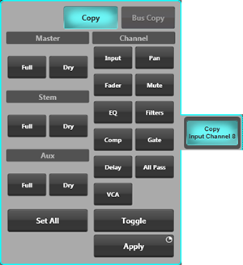
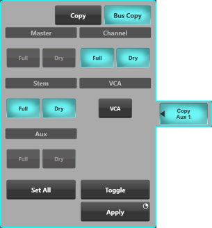

Copy
Path signal processing, bus, and pan settings can be copied between paths using the Copy button in the right edge of the Channel View screen.
The copy function can be used to copy complete channels or individual channel components (including each component of signal processing and panning).

First tap the copy from channel on the screen, or by using the SELECT buttons on the Fader Tiles. Then tap Copy to open the Copy window.
The path to copy from has been indicated in green.
Select the parameters to copy from the list. You can also Set All parameters, and Toggle them on and off.
Now select the paths to paste to - either on the screen or using the SELECT buttons on the Fader Tiles. These paste to paths have been indicated in purple.
Then press and hold Apply.
To finish, press the Copy again to close the window and clear the selection.
Tip: Use Range Select for a quick copy to multiple paths. Hold down the SELECT button of the first path, then tap the SELECT button of the last path in the range. Now release both buttons. This can also be done across neighbouring Fader Tiles.The following components can be copied individually:
- Full and Dry Processing Master sends
- Full and Dry Processing Aux sends
- Full and Dry Processing Stem sends
- Channel Input settings
- Pan
- Fader level
- Mute status
- EQ (Full Processing and Matrix Output paths only)
- High- and Low-pass Filters (Full Processing and Matrix Output paths only)
- Compressor (Full Processing paths only)
- Gate (Full Processing paths only)
- Delay (Full Processing and Matrix Output paths only)
- All Pass Filter (Full Processing and Matrix Output paths only)
- VCA assignments
Copying Send Mixes

You may recreate a particular Stem, Aux, or Master mix onto another Stem, Aux, or Master bus using Channel View Bus Copy.
- Select the bus path strip to be copied from.
- Touch Copy to reveal the copy window. The path to copy from will be indicated in green.
- Touch Bus Copy.
- Select which path types to copy. Use Set All and Toggle for even faster selection manipulation.
- Now select the paths to paste to. They will be indicated in purple.
- Now press and hold Apply.
- To finish, press the Copy again to close the window and clear the selection.
Bus Copy can be used to copy between bus types, e.g. to copy an Aux mix to a Stem.
Beware: There is no way to recover settings overwritten during a copy process other than recalling them from a previously saved scene or showfile.
Which Parameters are Included in Copy?
The same parameters and settings are included in Copy as are included in Scene Storage. To find out which parameters are included in the scenes please go to Storage.
Useful Links
Path LinkingIndex and Glossary